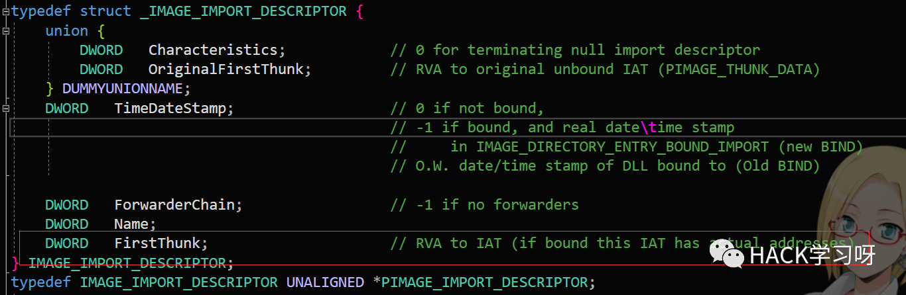
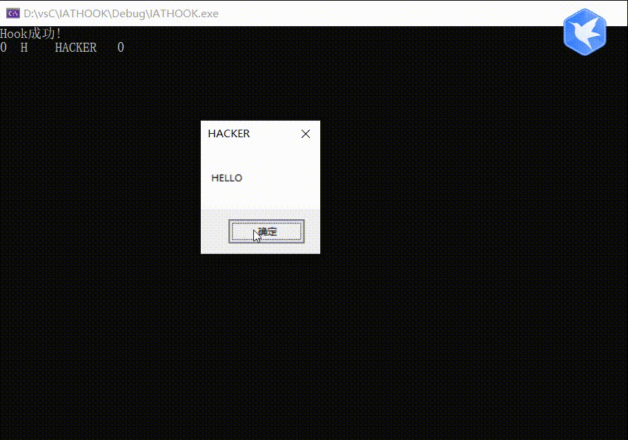

红队 | IAT Hook技术实现
HOOK
1.监控
2.行为改变
改变执行流,让函数先到我这里,获得优先执行权
思路
导入表中有个IAT表,在导入表结构中的FirstThunk.在调用一些API时,只要是LoadLibrary的dll,其中的API都会在IAT表中,我们可以通过IAT表来寻找我们想要"了解"的函数,并对其进行操作,比如将这个API替换成自己的函数,但是注意参数要相同,不然栈平衡不了。

我这里用简单的MessageBox来说明IAT HOOK问题
SetHook
DWORD SetIATHook(DWORD OldAddr,DWORD NewAddr) //oldAddr是原地址,NewAddr是我们自己的函数{DWORD dwImageBase = 0;PIMAGE_DOS_HEADER pDosHeader;PIMAGE_NT_HEADERS pNTHeader = NULL;PIMAGE_FILE_HEADER pPEHeader = NULL;PIMAGE_OPTIONAL_HEADER32 pOptionHeader = NULL;PIMAGE_SECTION_HEADER pSectionHeader = NULL;PIMAGE_IMPORT_DESCRIPTOR pImport = NULL;PDWORD pIATThunk = NULL;DWORD oldProtected = 0;bool Flag = FALSE;dwImageBase = (DWORD)::GetModuleHandle(NULL); //获取进程基址pDosHeader = (PIMAGE_DOS_HEADER)dwImageBase;pNTHeader = (PIMAGE_NT_HEADERS)((DWORD)pDosHeader + pDosHeader->e_lfanew);pPEHeader = (PIMAGE_FILE_HEADER)((DWORD)pNTHeader + 4);pOptionHeader = (PIMAGE_OPTIONAL_HEADER32)((DWORD)pPEHeader + IMAGE_SIZEOF_FILE_HEADER);pImport = (PIMAGE_IMPORT_DESCRIPTOR)(pOptionHeader->DataDirectory[1].VirtualAddress + dwImageBase); //定位导入表0 //定位IAT表while (pImport->FirstThunk != 0 && Flag == FALSE){pIATThunk = (PDWORD)(pImport->FirstThunk + dwImageBase);printf("%s\n", dwImageBase + pImport->Name);while (*pIATThunk){if (*pIATThunk == OldAddr){VirtualProtect(pIATThunk, 0x1000, PAGE_EXECUTE_READWRITE, &oldProtected);*pIATThunk = NewAddr;Flag = TRUE;printf("Hook成功!\n");break;}printf("%x\n", pIATThunk);pIATThunk++;}pImport++;}return Flag;}
大体就是获取基址,定位导入表,IAT表,找到目标API,用我们自己的函数地址替换原来API函数地址
有一个关键的地方,30行需要改变可写属性,因为31行那个位置是不能写入的(0xc0000005),VirtualProtect然后最后一个参数必须要有值,不能是NULL,主要这个细节卡了一下
获取OldAddr
DWORD OldFunc = (DWORD)::GetProcAddress(LoadLibrary(L"USER32.dll"), "MessageBoxW");UnSetHook
DWORD UnSetIATHook(DWORD OldAddr, DWORD NewAddr){DWORD dwImageBase = 0;PIMAGE_DOS_HEADER pDosHeader;PIMAGE_NT_HEADERS pNTHeader = NULL;PIMAGE_FILE_HEADER pPEHeader = NULL;PIMAGE_OPTIONAL_HEADER32 pOptionHeader = NULL;PIMAGE_SECTION_HEADER pSectionHeader = NULL;PIMAGE_IMPORT_DESCRIPTOR pImport = NULL;PDWORD pIATThunk = NULL;bool Flag = FALSE;dwImageBase = (DWORD)::GetModuleHandle(NULL); //获取进程基址pDosHeader = (PIMAGE_DOS_HEADER)dwImageBase;pNTHeader = (PIMAGE_NT_HEADERS)((DWORD)pDosHeader + pDosHeader->e_lfanew);pPEHeader = (PIMAGE_FILE_HEADER)((DWORD)pNTHeader + 4);pOptionHeader = (PIMAGE_OPTIONAL_HEADER32)((DWORD)pPEHeader + IMAGE_SIZEOF_FILE_HEADER);pImport = (PIMAGE_IMPORT_DESCRIPTOR)(pOptionHeader->DataDirectory[1].VirtualAddress + dwImageBase); //定位导入表while (pImport->FirstThunk != 0 && Flag == FALSE){pIATThunk = (PDWORD)(pImport->FirstThunk + dwImageBase);while (*pIATThunk){if (*pIATThunk == NewAddr){*pIATThunk = OldAddr;Flag = TRUE;break;}pIATThunk++;}pImport++;}return Flag;}
达到目的后要恢复原来的函数
自己希望执行的函数
int WINAPI MyMessageBoxW(HWND hWnd, LPCWSTR lpText, LPCWSTR lpCaption, UINT uType){printf("%x %s %ws %x\n", hWnd, lpText, lpCaption, uType);typedef int (WINAPI* pMessageBox)(HWND, LPCWSTR, LPCWSTR, UINT);//int ret = MessageBox(hWnd, lpText, lpCaption, uType);int ret = ((pMessageBox)OldFunc)(hWnd, lpText, lpCaption, uType);printf("返回值%x", ret);return ret;}
参数一传进来,我们就可以接收,其实还可以改变参数等等,这里必须要定义函数指针,因为原来的MessageBox那个地址已经被我们改了,如果又使用API MessageBox的话(像我注释的那行),会进入死循环,我们想得到参数又不想干扰原来的功能,所以定义一个函数指针来调用原来那个"OldAddr"即MessageBox的地址
测试代码
int TestIATHOOK(){SetIATHook(OldFunc, (DWORD)MyMessageBoxW);MessageBox(NULL, L"HELLO", L"HACKER", MB_OK);UnSetIATHook(OldFunc, (DWORD)MyMessageBoxW);return 1;}
测试结果

完整代码
// IATHOOK.cpp : 此文件包含 "main" 函数。程序执行将在此处开始并结束。
#include <iostream>#include <windows.h>DWORD OldFunc = (DWORD)::GetProcAddress(LoadLibrary(L"USER32.dll"), "MessageBoxW");DWORD SetIATHook(DWORD OldAddr,DWORD NewAddr){DWORD dwImageBase = 0;PIMAGE_DOS_HEADER pDosHeader;PIMAGE_NT_HEADERS pNTHeader = NULL;PIMAGE_FILE_HEADER pPEHeader = NULL;PIMAGE_OPTIONAL_HEADER32 pOptionHeader = NULL;PIMAGE_SECTION_HEADER pSectionHeader = NULL;PIMAGE_IMPORT_DESCRIPTOR pImport = NULL;PDWORD pIATThunk = NULL;DWORD oldProtected = 0;bool Flag = FALSE;dwImageBase = (DWORD)::GetModuleHandle(NULL); //获取进程基址pDosHeader = (PIMAGE_DOS_HEADER)dwImageBase;pNTHeader = (PIMAGE_NT_HEADERS)((DWORD)pDosHeader + pDosHeader->e_lfanew);pPEHeader = (PIMAGE_FILE_HEADER)((DWORD)pNTHeader + 4);pOptionHeader = (PIMAGE_OPTIONAL_HEADER32)((DWORD)pPEHeader + IMAGE_SIZEOF_FILE_HEADER);pImport = (PIMAGE_IMPORT_DESCRIPTOR)(pOptionHeader->DataDirectory[1].VirtualAddress + dwImageBase); //定位导入表//定位IAT表while (pImport->FirstThunk != 0 && Flag == FALSE){pIATThunk = (PDWORD)(pImport->FirstThunk + dwImageBase);while (*pIATThunk){if (*pIATThunk == OldAddr){VirtualProtect(pIATThunk, 0x1000, PAGE_EXECUTE_READWRITE, &oldProtected);*pIATThunk = NewAddr;Flag = TRUE;printf("Hook成功!\n");break;}pIATThunk++;}pImport++;}return Flag;}DWORD UnSetIATHook(DWORD OldAddr, DWORD NewAddr){DWORD dwImageBase = 0;PIMAGE_DOS_HEADER pDosHeader;PIMAGE_NT_HEADERS pNTHeader = NULL;PIMAGE_FILE_HEADER pPEHeader = NULL;PIMAGE_OPTIONAL_HEADER32 pOptionHeader = NULL;PIMAGE_SECTION_HEADER pSectionHeader = NULL;PIMAGE_IMPORT_DESCRIPTOR pImport = NULL;PDWORD pIATThunk = NULL;bool Flag = FALSE;dwImageBase = (DWORD)::GetModuleHandle(NULL); //获取进程基址pDosHeader = (PIMAGE_DOS_HEADER)dwImageBase;pNTHeader = (PIMAGE_NT_HEADERS)((DWORD)pDosHeader + pDosHeader->e_lfanew);pPEHeader = (PIMAGE_FILE_HEADER)((DWORD)pNTHeader + 4);pOptionHeader = (PIMAGE_OPTIONAL_HEADER32)((DWORD)pPEHeader + IMAGE_SIZEOF_FILE_HEADER);pImport = (PIMAGE_IMPORT_DESCRIPTOR)(pOptionHeader->DataDirectory[1].VirtualAddress + dwImageBase); //定位导入表while (pImport->FirstThunk != 0 && Flag == FALSE){pIATThunk = (PDWORD)(pImport->FirstThunk + dwImageBase);while (*pIATThunk){if (*pIATThunk == NewAddr){*pIATThunk = OldAddr;Flag = TRUE;break;}pIATThunk++;}pImport++;}return Flag;}int WINAPI MyMessageBoxW(HWND hWnd, LPCWSTR lpText, LPCWSTR lpCaption, UINT uType){printf("%x %s %ws %x\n", hWnd, lpText, lpCaption, uType);typedef int (WINAPI* pMessageBox)(HWND, LPCWSTR, LPCWSTR, UINT);//int ret = MessageBox(hWnd, lpText, lpCaption, uType);int ret = ((pMessageBox)OldFunc)(hWnd, lpText, lpCaption, uType);printf("返回值%x", ret);return ret;}int TestIATHOOK(){SetIATHook(OldFunc, (DWORD)MyMessageBoxW);MessageBox(NULL, L"HELLO", L"HACKER", MB_OK);UnSetIATHook(OldFunc, (DWORD)MyMessageBoxW);return 1;}int main(){TestIATHOOK();}

推荐阅读：
本月报名可以参加抽奖送暗夜精灵6Pro笔记本电脑的优惠活动

点赞，转发，在看
原创投稿作者：Buffer